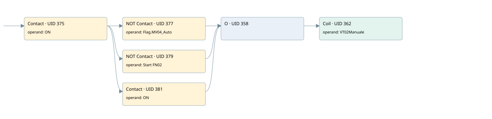

disable pid control on vt02
cyc_int5 ogni 100ms · 검색 색인 순서 9 · 원본 내부 NID 추정 9
백업 PLF 원본의 3103591 바이트 위치에서 복원한 XML. 검색 문서 12의 객체 키 16102200d96a000000000000와 연결했다. 이름 해석 5/5개. 남은 RefId는 상수 또는 미해석 참조다.
연결 구조 다시 그리기
원본 Part/PCon/Wire를 이용한 연결도다. TIA 화면의 래더 배치 또는 실행 결과를 재현한 그림은 아니다. 핀 연결은 아래 표와 원본 XML을 기준으로 읽는다. 노드 위에 마우스를 두면 피연산자 이름을 볼 수 있다.

접점·코일·블록과 피연산자
| Part UID | Gate | Negated 핀 | 연결 피연산자 |
|---|---|---|---|
| 375 | Contact | operand = ON | |
| 377 | Contact | operand | operand = Flag.MV04_Auto |
| 379 | Contact | operand | operand = Start FN02 |
| 381 | Contact | operand = ON | |
| 358 | O | ||
| 362 | Coil | operand = VT02Manuale |
접점 경로를 펼친 조건식
Contact·O/A·비교기의 원본 연결을 읽기 쉽게 펼친 보조 해석이다. POWER는 전원 레일 시작을 뜻한다. 호출 블록·에지·타이머의 내부 동작과 다중 쓰기 순서는 이 표로 실행 검증하지 않았다. 미해석 핀과 RefId는 원문 연결표에서 확인한다.
| UID | 동작 | 대상 | 원본 접점 경로 | 내용 |
|---|---|---|---|---|
| 362 | Coil | VT02Manuale | ((ON AND NOT [Flag.MV04_Auto]) OR (ON AND NOT [Start FN02]) OR ON) | 조건에 따른 Coil 기록 |
원본 배선 연결
| Wire UID | 동일 Wire 연결 끝점 |
|---|---|
| 383 | Powerrail {} ↔ Part 375.in |
| 368 | ORef 363 (ON) ↔ Part 375.operand |
| 376 | Part 375.out ↔ Part 377.in ↔ Part 379.in ↔ Part 381.in |
| 369 | ORef 364 (Flag.MV04_Auto) ↔ Part 377.operand |
| 378 | Part 377.out ↔ Part 358.in1 |
| 370 | ORef 365 (Start FN02) ↔ Part 379.operand |
| 380 | Part 379.out ↔ Part 358.in2 |
| 371 | ORef 366 (ON) ↔ Part 381.operand |
| 382 | Part 381.out ↔ Part 358.in3 |
| 372 | Part 358.out ↔ Part 362.in |
| 374 | ORef 367 (VT02Manuale) ↔ Part 362.operand |
식별자 해석 근거 5개
| ORef UID | RefId | 이름 | IdentXmlPart 파일 | 해석 방법 |
|---|---|---|---|---|
| 363 | 17 | ON | 0670-IdentXmlPart.xml | UID/RID + search-text + NID agreement |
| 364 | 50 | Flag.MV04_Auto | 0668-IdentXmlPart.xml | UID/RID + search-text + NID agreement |
| 365 | 79 | Start FN02 | 0670-IdentXmlPart.xml | UID/RID + search-text + NID agreement |
| 366 | 17 | ON | 0670-IdentXmlPart.xml | UID/RID + search-text + NID agreement |
| 367 | 80 | VT02Manuale | 0669-IdentXmlPart.xml | UID/RID + search-text + NID agreement |
검색 코드 보조 자료
참조 명칭을 찾기 위한 자료이며 실행 순서나 AND/OR 관계는 위 연결표로 확인한다.
"on" "flag".mv04_auto #vt02manuale "start fn02" "on"